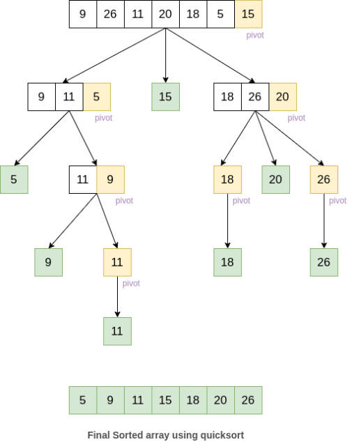

Quick Sort
After sorting you can search the array with binary search.

Take last element as pivot and low and high are indexes of full array's start and end
import pdb
def partition(arr, low, high):
i = (low-1) # index of smaller element
pivot = arr[high] # pivot, takes right most element
# print("call to partition")
# pdb.set_trace()
for j in range(low, high):
# If current element is smaller than or
# equal to pivot
if arr[j] <= pivot:
# increment index of smaller element
i = i+1
arr[i], arr[j] = arr[j], arr[i]
# print(arr)
arr[i+1], arr[high] = arr[high], arr[i+1]
# print(arr)
return (i+1)
# low and high are indexes of full array's start and end
def quickSort(arr, low, high):
if len(arr) == 1:
return arr
if low < high:
# pi is partitioning index, arr[p] is now
# at right place
pi = partition(arr, low, high)
# pdb.set_trace()
# Separately sort elements before
# partition and after partition
quickSort(arr, low, pi-1)
quickSort(arr, pi+1, high)
# Driver code to test above
arr = [2, 7, 8, 9, 1, 5]
n = len(arr)
quickSort(arr, 0, n-1)
print("Sorted array is:",arr)
# for i in range(n):
# print("%d" % arr[i]),
Big O notation for this algorithm is O(log(n)). However according to medium.com, O(log (n)) speed is a best-case/average time, in worst case scenarios it can be O(n2) depending on the implementation.